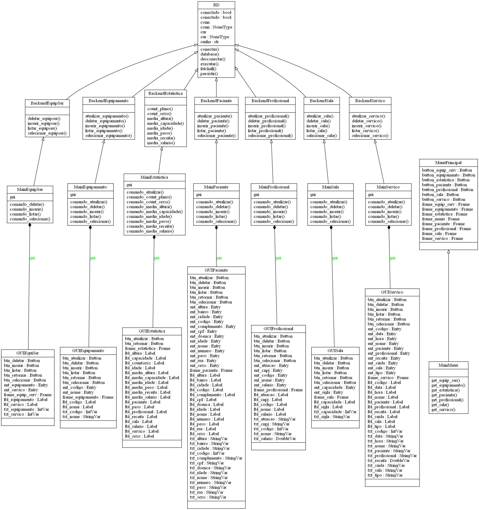

Código
Diagrama de Classes

Descrição breve
As classes GUI são responsáveis pela base da interface gráfica. São nelas que estão localizadas as variáveis de Texto, Label, Button, Frame e Entry. Sem elas tudo se resumiria a uma linha de comando pouco amigável para usuários.
class MenuPrincipal # Pequeno trecho retirado do código da classe. def __init__(self): Tk.__init__(self) self.frame_menu = tk.Frame(self) self.frame_paciente = tk.Frame(self) self.frame_profissional = tk.Frame(self) self.frame_sala = tk.Frame(self) self.frame_equipamento = tk.Frame(self) self.frame_servico = tk.Frame(self) self.frame_equip_serv = tk.Frame(self) self.frame_menu.grid(row=0, column=0) """Essa classe é responsável pelo menu que irá abrir todas as outras telas, sendo nela que são criados os frames para as outras GUI, junto com o posicionamento grid desses frames. Pode-se dizer que ela é o alicerce da interface."""
Já as classes Main associam a claúsula "command" do tkinter aos botões e respectivos métodos. Todos, com exceção da class MainMenu, herdam das classes Backend,
cada um formando uma linha de conexão para cada tabela do banco. É aqui onde os atributos Text inseridos nos campos das interfaces serão captados usando .get(),
enviando os parâmetros para o backend. Além disso, são realizados testes e inseridas exceções para facilitar o entendimento do usuário.
# Método comando_inserir da class MainPaciente def comando_inserir(self): """Realize o comando INSERT na tabela Paciente.""" try: self.inserir_paciente(self.gui.txt_cpf.get(), self.gui.txt_nome.get(), self.gui.txt_idade.get(), self.gui.txt_sexo.get(), self.gui.txt_doenca.get(), self.gui.txt_altura.get(), self.gui.txt_peso.get(), self.gui.txt_cidade.get(), self.gui.txt_bairro.get(), self.gui.txt_rua.get(), self.gui.txt_numero.get(), self.gui.txt_complemento.get()) except psycopg2.IntegrityError: print('CPF já utilizado.') except psycopg2.ProgrammingError: print('Inseriu letras em campos númericos.') except psycopg2.DataError: print('Ultrapassou o limite de caracteres ou números de ' 'um campo.\n' '(OBS: Altura deve ser colocada em metros ex.: 1.75)')
No caso da classe MainMenu, ela herdará do frontend.MenuPrincipal para facilitar a manipulação dos atributos e botões. Ela se utiliza de métodos
para invocar cada tela, inserindo como parâmetro para o requisito parent a sua própria instância.
class MainMenu(frontend.MenuPrincipal): """Atribua comandos aos botões do menu principal""" def __init__(self): frontend.MenuPrincipal.__init__(self) self.button_paciente["command"] = self.get_paciente self.button_profissional["command"] = self.get_profissional self.button_sala["command"] = self.get_sala self.button_equipamento["command"] = self.get_equipamento self.button_servico["command"] = self.get_servico self.button_servico["command"] = self.get_servico self.button_equip_serv["command"] = self.get_equip_ser def get_paciente(self): """Invoque a GUI Paciente.""" MainPaciente(self)
Por fim, a class BD é a responsável por executar o comandos do psycopg2, sendo esses inseridos em métodos para poderem ser utilizados pelas class Backend.
Essas classes herdam de BD e possuem métodos para captar como parâmetro o que foi enviado pelas classes Main.
class BackendPaciente(BD): """Realize os comandos SQL da tabela Paciente.""" def __init__(self): BD.__init__(self) def inserir_paciente(self, cpf, nome, idade, sexo, doenca, altura, peso, cidade, bairro, rua, numero, complemento): """Insira na tabela Paciente as informações.""" self.conectar() if idade == '': idade = 'NULL' if altura == '': altura = 'NULL' if peso == '': peso = 'NULL' self.executar("INSERT INTO paciente(cpf, nome, idade, sexo, doenca, \ altura, peso, cidade, bairro, rua, numero, complemento) \ VALUES('{}','{}',{},'{}','{}',{},{},'{}', '{}','{}', \ '{}','{}')".format(cpf, nome, idade, sexo, doenca, altura, peso, cidade, bairro, rua, numero, complemento)) self.persistir() self.desconectar()